In this example we consider our first time-dependent Navier-Stokes problem and demonstrate how to apply periodic boundary conditions.
The example problem
We consider finite-Reynolds-number flow in a 2D channel that is driven by the oscillatory tangential motion of the "upper" wall:
Here is a sketch of the problem:
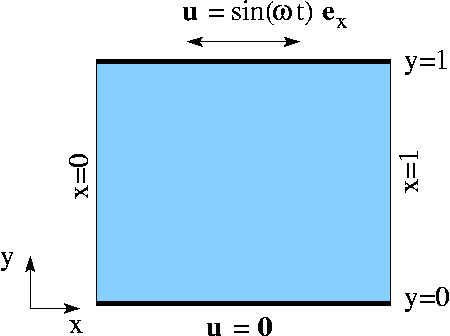
Sketch of the problem. The flow is governed by the 2D unsteady Navier-Stokes equations,
and the continuity equation
in the domain 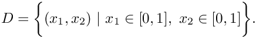 We apply the Dirichlet (no-slip) boundary condition 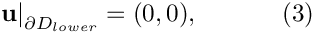 on the lower, stationary wall, 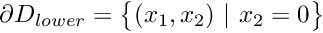 , apply the Dirichlet (no-slip) conditions 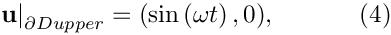 on the upper, moving wall , 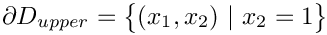 , and apply periodic boundary condition on the "left" and "right" boundaries: 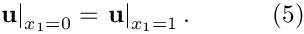 Initial conditions for the velocities are given by 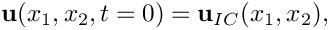 where 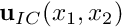 is given. |
![\[ Re\left(St\frac{\partial u_i}{\partial t} + u_j\frac{\partial u_i}{\partial x_j}\right) = - \frac{\partial p}{\partial x_i} + \frac{\partial }{\partial x_j} \left( \frac{\partial u_i}{\partial x_j} + \frac{\partial u_j}{\partial x_i} \right) \ \ \ \ \ \ \ \ \ \ (1) \]](form_0.png)
![\[ \frac{\partial u_i}{\partial x_i} = 0 \ \ \ \ \ \ \ \ \ \ (2) \]](form_1.png)
The exact solution
The above problem has an exact, time-periodic parallel flow solution of the form
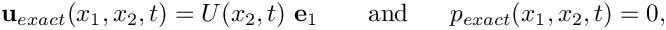
where 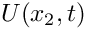 is governed by
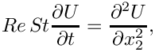
subject to the boundary conditions 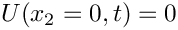 and 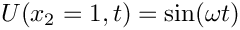 . The solution is given by
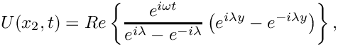
where
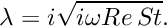
Results
The two animations below show the computed solutions obtained from a spatial discretisation with Taylor-Hood and Crouzeix-Raviart elements, respectively. In both cases we set 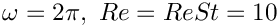 and specified the exact, time-periodic solution as the initial condition, i.e.  . The computed solutions agree extremely well with the exact solution throughout the simulation.
. The computed solutions agree extremely well with the exact solution throughout the simulation.

If the simulation is started from other initial conditions, i.e. 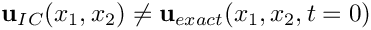 , the velocity field initially differs noticeably from the time-periodic solution 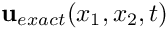 but following the decay of initial transients we have
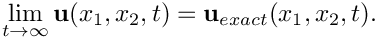
This is illustrated in the following plot which shows the evolution of the L2-"error" between the computed and the time-periodic solutions for two different initial conditions. The red line was obtained from a simulation in which ; the blue line was obtained from a computation in which the simulation was started by an "impulsive start", 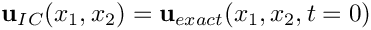 .
The animations of the simulations for the "impulsive start" (for Taylor-Hood and Crouzeix-Raviart elements) show how the velocity profile approaches the time-periodic solution as the simulation progresses.
The global parameters
As usual, we use a namespace to define the problem parameters, the Reynolds number, 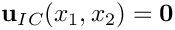 , and the Womersley number,  . We also provide two flags that indicate the length of the run (to allow a short run to be performed when the code is run as a self-test), and the initial condition (allowing a start from
. We also provide two flags that indicate the length of the run (to allow a short run to be performed when the code is run as a self-test), and the initial condition (allowing a start from  or an impulsive start in which the fluid is initially at rest).
or an impulsive start in which the fluid is initially at rest).
The exact solution
We use another namespace to define the exact, time-periodic parallel-flow solution:
The driver code
We use optional command line arguments to specify which mode the code is run in: Either as a short or a long run (indicated by the first command line argument being 0 or 1, respectively), and with initial conditions corresponding to an impulsive start or a start from the time-periodic exact solution (indicated by the second command line argument being 1 or 0, respectively). If no command line arguments are specified the code is run in the default mode, specified by the parameter values assigned in the namespace Global_Parameters.
Next we set the physical and mesh parameters.
Finally we set up DocInfo objects and solve for both Taylor-Hood elements and Crouzeix-Raviart elements.
The problem class
The problem class is very similar to that used in the driven cavity example. We specify the type of the element and the type of the timestepper (assumed to be a member of the BDF family) as template parameters and pass the mesh parameters to the problem constructor.
No action is needed before or after solving, but we update the time-dependent boundary conditions at the upper wall before each timestep, using Problem::actions_before_implicit_timestep(). The boundary values are obtained from the exact solution, defined in the namespace ExactSoln.
The function unsteady_run(...), discussed below, performs the timestepping and documents the solution in the directory specified in the DocInfo object.
We define the function doc_solution(...) which documents the results, and provide functions to set the initial conditions and to fix a pressure value. The problem's only member data contains an output stream in which we record the time-trace of the solution.
The problem constructor
We start by building the timestepper, determining its type from the class's second template argument, and pass a pointer to it to the Problem, using the function Problem::add_time_stepper_pt(...).
Next we build the mesh and pass an additional boolean flag to the constructor to indicate that periodic boundary conditions are to be applied in the 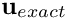 -direction. We will discuss the implementation of this feature in more detail in below.
We pin both velocity components on the top and bottom boundaries (i.e. at  and
and  , respectively), and pin the vertical velocity on the left and right boundaries (i.e. at
, respectively), and pin the vertical velocity on the left and right boundaries (i.e. at  and 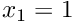 , respectively) to enforce horizontal outflow through the periodic boundaries.
and 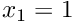 , respectively) to enforce horizontal outflow through the periodic boundaries.
Finally we pass the pointers to the Reynolds and Strouhal numbers,  and
and  , to the elements. Since no traction boundary conditions are applied anywhere, the pressure is only determined up to an arbitrary constant. To ensure a unique solution we pin a single pressure value before setting up the equation numbering scheme.
, to the elements. Since no traction boundary conditions are applied anywhere, the pressure is only determined up to an arbitrary constant. To ensure a unique solution we pin a single pressure value before setting up the equation numbering scheme.
Initial conditions
The application of initial conditions for vector-valued problems is performed by the same procedure that we described for scalar problems, except that we now have to assign "history
values" for multiple nodal values. For timesteppers from the BDF family, the "history values" represent the solution at previous timesteps. We check that the timestepper is of the appropriate type,
loop over previous time levels, determine the velocity at those times and assign them to the "history values" of the velocities. No initial conditions are required for the pressure. Note that we also have to assign "history values" for the nodal positions since oomph-lib's Navier-Stokes elements discretise the momentum equations in their ALE form. This aspect was explained in more detail in our discussion of the solution of the unsteady heat equation.
Post processing
The function doc_solution(...) is similar to those used in the unsteady heat examples. We plot the computed solution, the time-periodic exact solution and the difference between the two, and record various parameters in the trace file. The plot of the computed solution contains tecplot instructions that generate a blue line in the top-left corner of the plot to indicate how time progresses during the simulation. The trace file contains a record of
- the value of the continuous time,
 ,
, - the coordinates of a control node, 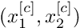 ,
- the computed velocity at the control node, 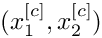 ,
- the time-periodic solution, evaluated at the control node, 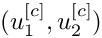 ,
- the difference between the computed velocities and the time-periodic solution at the control node,
- the L2 norm of the "error" between the computed and time-periodic solution for the velocity, and
- the L2 norm of the time-periodic solution for the velocity.
The timestepping loop
The function unsteady_run(...) is used to perform the timestepping procedure. We start by opening the trace file and write a suitable header for the visualisation with tecplot.
Next, we choose a value for the timestep and set up the initial conditions, either for an impulsive start...
...or for a "smooth" start from the time-periodic exact solution:
We choose the number of timesteps to be computed and document the initial conditions.
Finally, perform the actual timestepping and document the solution after every timestep.
Comments and Exercises
Periodic boundaries
A key feature of the current problem is the presence of periodic boundary conditions. The application of the periodic boundary condition is performed "inside" the mesh constructor and details of the implementation were therefore "hidden". We will now discuss the steps required to apply periodic boundary conditions and explain why it is easier to apply periodic boundary conditions in the mesh constructor rather than in the "driver code".
Periodic boundary conditions arise in problems that are periodic in one of their coordinate directions. It is important to realise that, even though the solution at the corresponding nodes on the two periodic domain boundaries (the left and the right boundary in the above example) are the same, one of their nodal coordinates differs. For instance, in the above example, each of the nodes on the left boundary has the same velocity values and the same 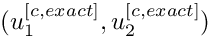 -coordinate as its corresponding (periodic) node on the right boundary. However, the  -coordinate of the nodes on the left boundary is 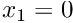 , whereas that of the (periodic) nodes on the right boundary is
-coordinate of the nodes on the left boundary is 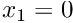 , whereas that of the (periodic) nodes on the right boundary is  . It is therefore not possible to regard the nodes as identical.
. It is therefore not possible to regard the nodes as identical.
In oomph-lib we create periodic nodes by allowing two (or more) nodes to access some of the same internal data. One of the nodes should be regarded as the original and the other(s) are set to be its "periodic counterpart(s)" and hence access its internal data. The "periodic counterpart(s)" are created by calling the member function
where the pointer to the original node is passed as the argument. Note that the required functionality imposes a slight storage overhead and so in oomph-lib we only allow BoundaryNodes to be made periodic.
Here is a sketch of a 2D rectangular quad mesh. If this mesh is to be used in a problem with periodic boundary conditions in the horizontal direction (as in the above example), the pointer to node 3 on boundary 3 would have to be used when node 3 on boundary 1 is made periodic, etc. The appropriate commands are
Although it is possible to make nodes periodic at any time, it is usually easier to determine which nodes should be "connected" during mesh construction. We therefore strongly recommend to implement periodic boundary conditions inside the mesh constructor. The source code for the constructor of the
that we used in the above problem, illustrates a possible implementation.
Periodic boundaries in spatially adaptive computations
We note that the application of periodic boundary conditions in spatially adaptive computations is slightly more complicated because of the possible presence of hanging nodes on the periodic boundaries. We refer to another tutorial for a discussion of this aspect.
Exercises
- Show that in the present problem the time-periodic solution can also be obtained without applying periodic boundary conditions. Show this mathematically and "by trial and error" (i.e. by changing the boolean flag that is passed to the mesh constructor). Explain why the number of unknowns increases when no periodic boundary conditions are applied.
- Confirm that the assignment of "history values" for the nodal positions in
set_initial_conditions()is essential.
Source files for this tutorial
- The source files for this tutorial are located in the directory:
demo_drivers/navier_stokes/rayleigh_channel/ - The driver code is:
demo_drivers/navier_stokes/rayleigh_channel/rayleigh_channel.cc
PDF file
A pdf version of this document is available.